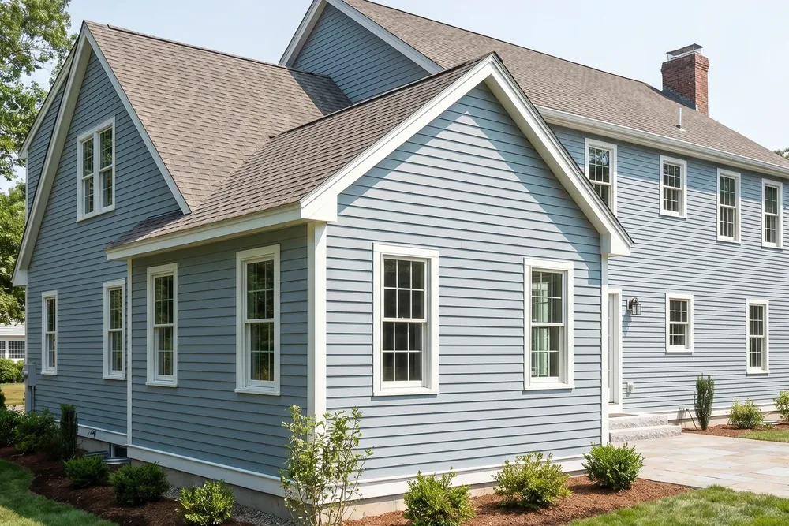
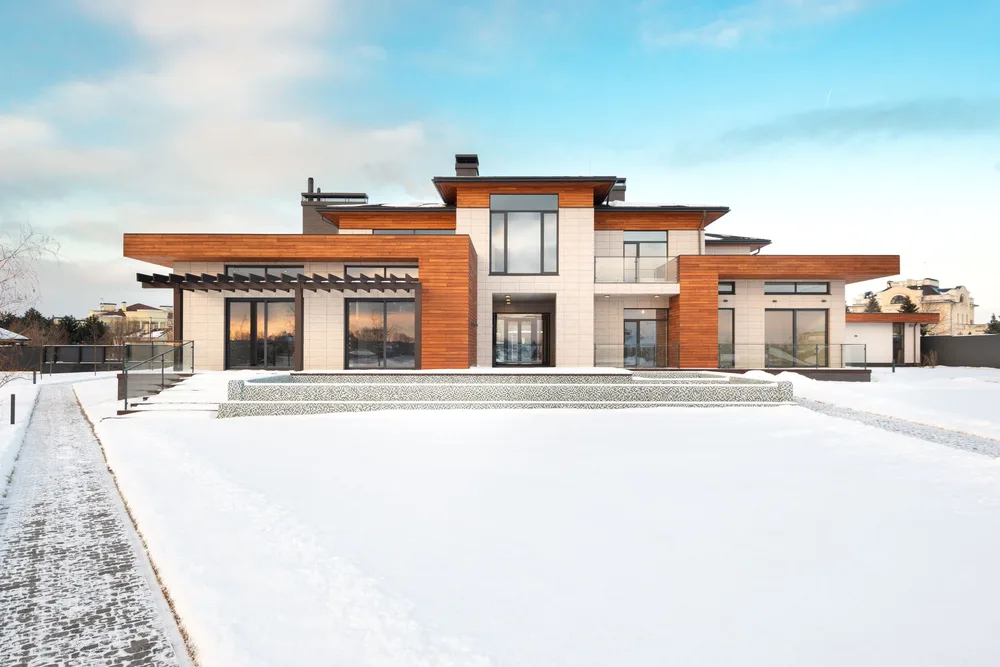
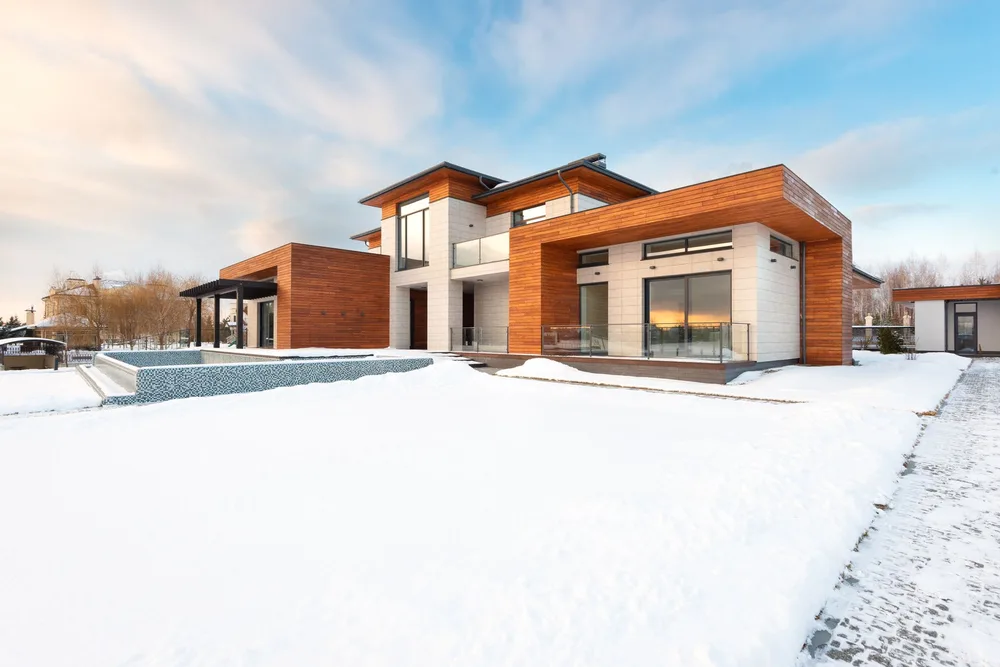
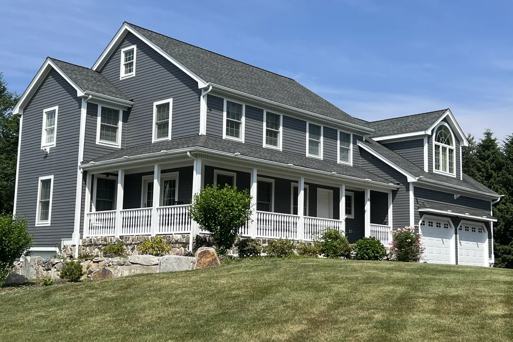
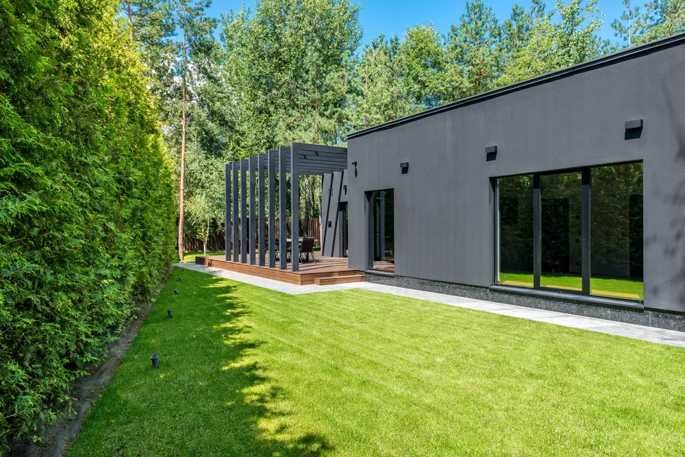
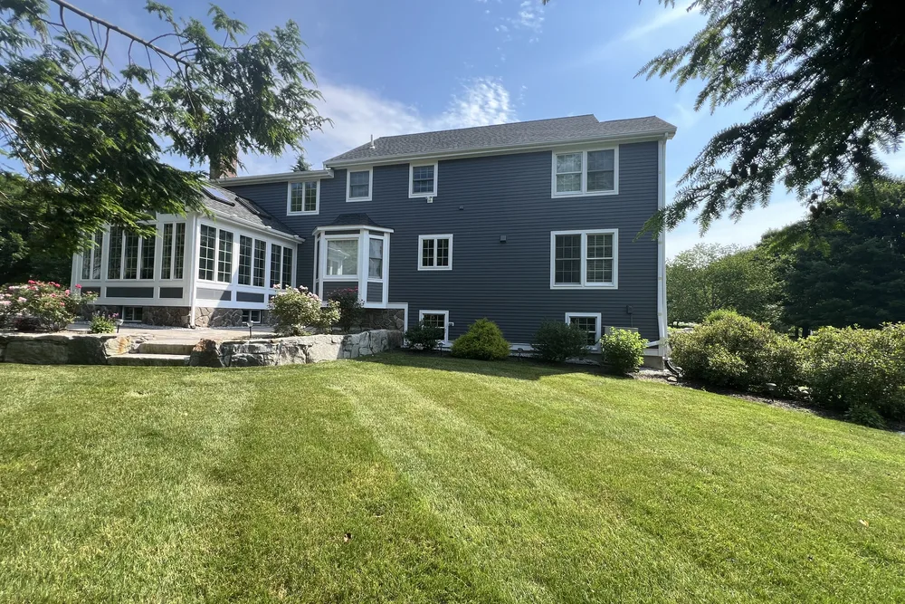
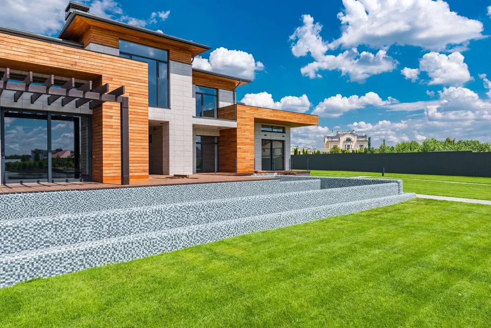
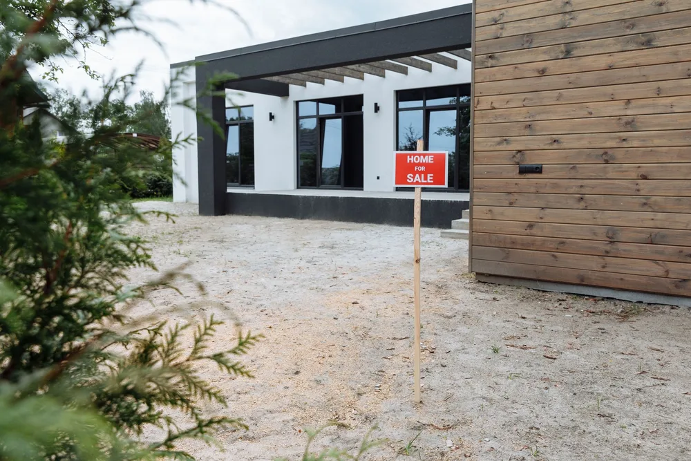

Weston home addition contractors
Weston home additions that look like they belong
Weston home additions from DeFaria Construction connect new space to the existing home, with structure, exterior tie-ins and finish planned before the first wall goes up.
Local search focus
Weston home additions start with how the new space meets the old.

Across Weston Center, Silver Hill, Kendal Green, Case's Corner and Hastings, Weston ranges from First Period and colonial homes to grand estates, Queen Anne Victorians and contemporary custom homes on large wooded lots. A Weston addition has to match the roofline, siding and structure of the existing home, so it reads as part of the house, not a box bolted on.
This page is built for Weston homeowners comparing home addition contractors near them. It connects the Weston search to project photos, neighborhoods, the full addition scope and a direct estimate path.
- Clear estimate conversations before the project starts.
- Direct communication with the homeowner from walkthrough to final walkthrough.
- Local coverage across Weston and the wider Middlesex County area.
The scope
What a full Weston home addition covers

In Weston, First Period and colonial homes on large wooded lots, some dating to the early 1700s, often add structural and access constraints.
- A foundation and frame built to join the existing structure.
- Exterior blended so the addition reads as part of the house.
- Finish, wiring and plumbing tied into the rest of the home.
Weston permits and inspections run through the Town of Weston Building Department, and DeFaria keeps that step organized so scope and timeline stay realistic.
Cost
How much does a home addition cost in Weston?

For a Weston addition, budget around $150 to $350 per square foot, so a room addition is often $60,000 to $150,000 and a bigger build more. The estimate follows the real scope, never a flat number.
- The size and footprint of the addition.
- Whether it is a ground-level or second-story build.
- Rooflines, siding and how the exterior ties into the existing home.
- Interior finishes, plumbing and electrical the new space needs.
Because First Period and colonial homes on large wooded lots, some dating to the early 1700s, often add structural and access constraints in Weston, hidden conditions behind the walls are priced honestly at the walkthrough, not discovered mid-project.
DeFaria gives a fixed, itemized Weston estimate at the walkthrough, so the price matches the actual scope instead of a guess.
Process
How a Weston home addition runs, step by step

A Weston home addition moves through set stages, so you can see what comes next.
- Design walkthrough and an itemized estimate.
- Permitting and zoning with the town.
- Foundation, framing and structural tie-in.
- Roofing, windows and weather protection.
- Siding and trim matched to the existing exterior.
- Rough-in, insulation and drywall.
- Finish carpentry, paint and a final walkthrough.
DeFaria coordinates the Weston permit with the Town of Weston Building Department before the rough-in, and keeps you updated at each step.
A typical Weston addition runs roughly 8 to 16 weeks, depending on the scope and whether you build up or out.
Materials
Materials and finishes that hold up in Weston additions

In Middlesex County, an addition has to handle cold winters and weather, so the framing, insulation and siding are chosen to endure.
- A foundation built for the addition and the existing structure.
- Weatherproofing and insulation for four-season comfort.
- Exterior materials matched to siding, roof and trim.
- Trim, doors and finishes that carry through from the old space.
From Weston Center to Kendal Green, First Period and colonial homes on large wooded lots, some dating to the early 1700s, often add structural and access constraints, which is exactly why the finish is specified for the home rather than a catalog.
When to remodel
Signs it is time to add on in Weston

A few clear signs a Weston home is ready for an addition:
- Running short on bedrooms, baths or storage.
- Wanting an in-law suite, office or family room.
- A footprint that cannot stretch any further inside.
- Choosing to stay and expand rather than move.
- Building equity with more finished square footage.
They are common across Weston, from Weston Center to Kendal Green.
Project photos
Home addition photos for Weston homeowners
The Weston home addition page pairs local search intent with real project photos, so visitors see the finish level before requesting an estimate.
Areas covered
Home additions across Weston neighborhoods

DeFaria Construction supports home addition searches across Weston and nearby Middlesex County towns, giving visitors enough local context to decide whether DeFaria is the right fit before they call.
Whether the home is near Weston Center, Silver Hill or Hastings, the Weston home additions is planned for the local housing stock and permitted through the Town of Weston Building Department.
- Weston Center
- Silver Hill
- Kendal Green
- Case's Corner
- Hastings
Experience
Why this Weston page is built for real homeowners, not just keywords.

DeFaria Construction is a local construction and remodeling company serving homeowners and business owners across Essex County and Middlesex County. With direct owner involvement from Luiz DeFaria and BBB A+ credibility in the trust stack, the Weston home addition page is written around real structure, exterior tie-ins and finish coordination, not a city name dropped into a template.
DeFaria Construction is a licensed and insured local contractor with an A+ BBB rating and verified customer reviews, and every Weston project is owner-led by Luiz DeFaria from the first walkthrough to the final one.
"our Weston addition looks like it was always part of the house, right down to the siding and roofline."
Weston homeowner
The goal is to help someone searching for Weston home addition contractors understand the scope, the neighborhoods covered and how to start a direct conversation before requesting a free estimate.
Call (617) 893-2221 for a free estimateFAQ
Common questions about home additions in Weston
What home addition work does DeFaria Construction handle in Weston?
In Weston DeFaria Construction handles design, foundation, framing, roofing, exterior siding, and the interior electrical, plumbing and finish for a room or second-story addition.
How much does a home addition cost in Weston?
A Weston home addition usually runs about $150 to $350 per square foot, so a typical room addition lands between $60,000 and $150,000, and larger builds more. DeFaria gives a fixed, itemized estimate at the walkthrough.
How long does a Weston home addition take?
Most Weston home additions take about 8 to 16 weeks once permits are in, depending on size, foundation and finishes.
Will the addition match my existing Weston home?
Yes. DeFaria matches the roofline, siding, windows and trim so the Weston addition reads as part of the house, not a box added on.
Is DeFaria Construction licensed and insured?
Yes. DeFaria Construction is a licensed and insured contractor with an A+ BBB rating and verified reviews, and every Weston project is owner-led by Luiz DeFaria.
Does DeFaria handle Weston addition permits and inspections?
Yes. Weston permits and inspections run through the Town of Weston Building Department, and DeFaria keeps that step organized so scope and timeline stay realistic.